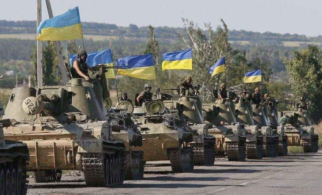

前段时间，在西方集团的不知悔改下，俄罗斯对乌克兰采取了相关军事行动，而这也就促使乌俄冲突全面爆发。近期，在乌俄冲突的持续发酵下，一个意外的情况出现了，世卫迅速站出来发出警告，全球疫情愈发严峻？

当地时间3月2日，据外媒报道，世卫组织当天对乌俄局势的发展表明言辞警告。组织总干事谭德塞表示称，在局势还未恶化之前，乌克兰地区就已出现疫情病例激增的端倪，而这也就意味着冲突爆发期间，乌克兰乃至全球的疫情局势将会进一步严峻。据官方机构的统计的数据显示，在乌俄冲突下，近87万民众逃离逃离乌克兰。对此，谭德塞表示称，大规模的人口流动将一定量导致病毒传播，且将会给周围地区的卫生系统带来压力。与此同时，世卫紧急项目执行主任瑞安补充称，一定程度上来说，在大规模人口流动下，还有可能会酝酿出新的变异病毒。显而易见，俄乌冲突或将会为疫情局势带来不必要的麻烦。
事实上，除了疫情外，其他领域也受到了此波冲突的冲击，能源方面就是最好体现。据有关机构统计的数据显示，国际油价当前行突破每桶110美元的价格（约合695元），达到14年9月最高位。一些专家指出称，之所以会出现如此情况，关键诱因就于乌俄冲突。很显然，这说明乌俄冲突正在意料之外地冲击多个领域。可遗憾的是，以美国为首的西方国家不仅不积极缓和危机，还欲在背后加大对俄罗斯的制裁力度。
当地时间3月2日，据外媒报道，在记者会上，白宫方面表示称，鉴于当前的形势，美国方面不排除对俄石油和天然气施行制裁措施。发言人普萨基表示，总统正在就此与有关人员磋商。据悉，美国会两党对于制裁俄罗斯能源的构想，十分高涨，着重表现为民主党参议员马基近日递交了一份阻止俄原油进口的法案。在此情况下，忠告美方一点，要承担起大国的责任，要深知乌俄冲突不能再继续发酵下去这一事实，不然，整个世界格局都将可能会发起震荡。